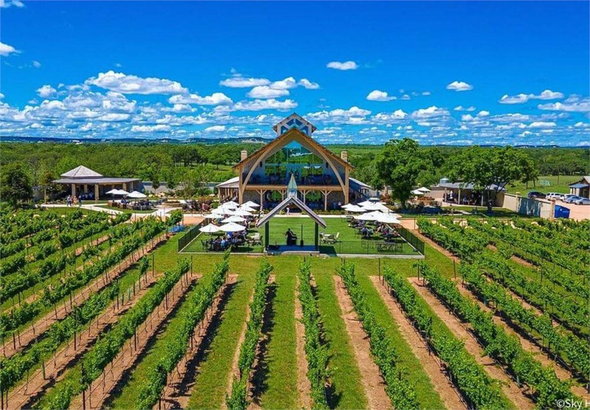

Augusta Vin Winery
A vineyard estate in Fredericksburg, with a tasting room overlooking the vines.
140 Augusta Vin Ln, Fredericksburg, TX 78624
The destination edit
Augusta Vin Winery
140 Augusta Vin Ln, Fredericksburg, TX 78624
Nestled in the rolling hills of Fredericksburg, Augusta Vin Winery is a must-visit for wine enthusiasts. With a stunning 60-acre estate, Augusta Vin offers an exceptional tasting experience. Sip on their exquisite wines while enjoying panoramic views of the vineyards from their luxurious tasting room. Whether you're a seasoned wine connoisseur or just starting your wine journey, Augusta Vin promises an unforgettable experience.